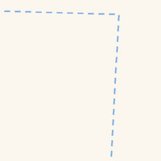

เลือกร้านก๋วยเตี๋ยว คลินิก ร้านทำเล็บ — จุดไหนก็ได้จากทั่วเว็บนี้ — แล้วมาดูพร้อมกันในหน้าเดียว รู้ระยะทางแต่ละช่วง เดินก็ได้ ขี่มอไซค์ก็ได้ แชร์ทริปทั้งหมดเป็นลิงก์เดียว หรือดาวน์โหลดเก็บไว้ก็ได้ · Pick a noodle stand, a clinic, a nail place — any mix of stops from anywhere on this site — and see them together on one page, with the distance between each leg on foot or by scooter. Share the whole run as one link, or download it to keep.
กด 🧭 "เพิ่มลงแผนเดินทาง" ที่หน้าร้านหรือในรายชื่อ แล้วกลับมาที่นี่ — เก็บได้สูงสุด 8 จุดต่อทริป · Tap "Add to plan" on any place page or listing row, then come back here — up to 8 stops per trip.

สามจุดจริง เส้นทางจริงตามถนน — ช่วงสุดท้ายบินตรงได้ 419 เมตร แต่เดินจริง 560 เมตร และขี่มอเตอร์ไซค์ 817 เมตร คนละเส้นกัน เพราะสะพานคนเดินมอเตอร์ไซค์ขึ้นไม่ได้ และถนนบางสายเดินรถทางเดียว · Three real stops, routed along real streets. That last leg is 419 m as the crow flies, 560 m on foot, and 817 m on a scooter — different lines, because a footbridge is no use to a scooter and some streets only run one way.
🐜 ยังไม่ได้เพิ่มจุดไหนเลย · No stops added yet
กด 🧭 "เพิ่มลงแผนเดินทาง" ที่หน้าร้านหรือในรายชื่อ แล้วกลับมาที่นี่ — เก็บได้สูงสุด 8 จุดต่อทริป · Tap "Add to plan" on any place page or listing row, then come back here — up to 8 stops per trip.
บอกว่าจะไปทำอะไร ไม่ต้องบอกว่าร้านไหน — มดจะเลือกร้านที่ทำให้รอบนี้สั้นที่สุดให้เอง · Say what you need, not which shop. The ants pick the ones that make the whole round shortest.
ลองจริง ๒๐ รอบ วิธีนี้สั้นกว่าการเลือกที่ใกล้ที่สุดทีละอย่าง ๑๔ รอบ ประหยัดกลาง ๆ ๕๗๗ เมตร มากสุด ๒.๙ กิโลเมตร และไม่เคยยาวกว่าเลย · Tested over 20 rounds: choosing together beat picking the nearest of each in 14 of them — median 577 m shorter, best 2.9 km — and was never longer.
ระยะทางคิดตามถนนจริงในเวียงเก่าและรอบ ๆ ราว ๒ กม. ช่วงจากหมุดออกมาถึงถนนคิดเป็นเส้นตรง ใช้กะเวลาคร่าว ๆ ไม่ใช่บอกทางเลี้ยวทีละช่วงเจ้า · Distances follow the real streets inside the old city and about 2 km around it. The short hop from a pin out to the road it stands on is measured straight, so a place set well back reads a little short. A guide to timing, not turn-by-turn directions.
ถ้าช่วงไหนต้องข้ามคูเมือง มดแดงจะคิดระยะอ้อมไปทางประตูหรือแจ่งที่ใกล้ที่สุดให้ จุดข้ามที่รู้จักคือประตูทั้งห้าและแจ่งทั้งสี่ — อาจมีสะพานอื่นอีกที่ยังไม่ได้บันทึกไว้ · Where a leg has to cross the moat, the distance shown is the way round by the nearest gate or corner, not through the water. The crossings on record are the five gates and the four แจ่ง corners — there may be other bridges we have not catalogued yet. The moat outline is traced between the four corner pins, so it runs a little inside the real bank in places.